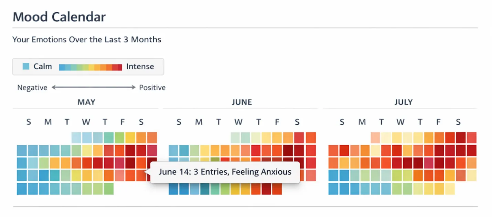
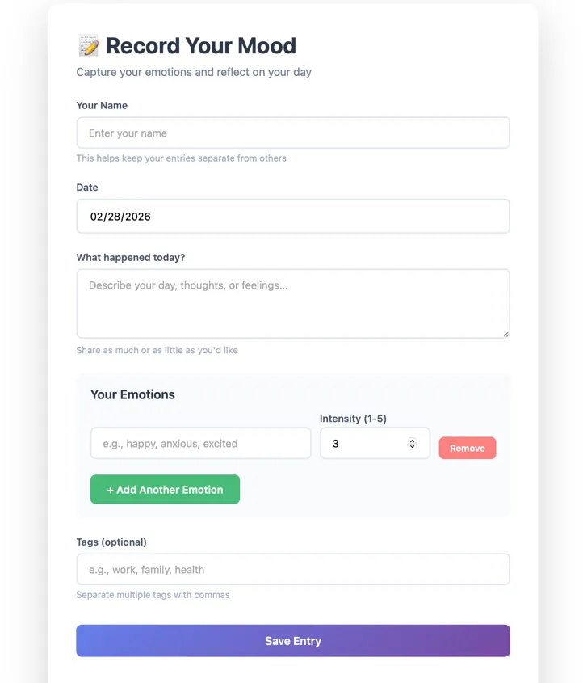
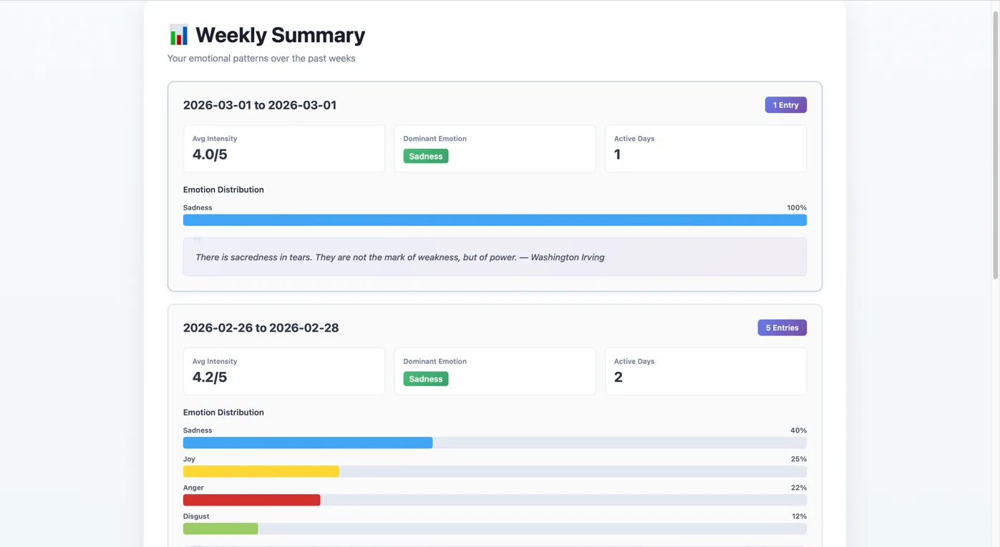

Vibe Coding / Reflective Interface / Python System
Emotion DiaryMood Calendar
From daily feelings to visual reflection.
A Flask-based mood tracking prototype that records daily emotions and turns them into calendar, daily, weekly, and monthly reflection views.

From emotional input to visual reflection.
The interface is organized as a readable journey: write a daily record, translate it into structured emotion data, then review the result through calendar color, summaries, and avatar-based expression.
The mood calendar turns repeated records into a visual rhythm. Hoverable blocks reveal date, number of entries, and dominant feeling, making emotional change easier to scan over time.


Structured input makes emotion data easier to read.
I separated emotion names and intensity values so the system can preserve multiple feelings in one day while still producing a clear calendar view. The diary description remains open-ended; structured values make patterns calculable.
Average intensity, dominant emotion, active days, distribution, quotes, and progress bars help the user move from memory logging into reflection.
- 01
Emotion mapping
Specific emotion words are mapped into six major categories drawn from prior literature review.
- 02
Intensity score
The score of one category is calculated by summing its intensity values across all records in a day.
- 03
Daily average
The average of all intensity values represents the emotional intensity of that day.
- 04
Calendar rule
When one day has multiple records, the calendar represents the main emotion from the latest input.
Different scales reveal different emotional patterns.
- 01
Mood calendar
Colored blocks show daily states with date, record count, and main emotion.
- 02
Daily analysis
Emotion map, profile, average intensity, records, quotes, and avatar videos.
- 03
Weekly summary
Average intensity, dominant emotion, active days, distribution, and progress bars.
- 04
Monthly summary
Monthly stats, trend indicator, emotion decomposition, and personalized insights.
Emotion avatars give the data a performative layer.
I created six main emotion avatars in Blender and used Mixamo action libraries for movement, extending the project from analysis into a more embodied emotional representation.
The avatar output acts as an expressive companion to the calendar and analysis views, connecting a structured record with a character and movement.